Os 5 destroços foram redesenhados maiores, com o mesmo design aprovado no M3. Não é bitmap ampliado: cada desenho roda de novo numa resolução maior (contorno e linhas continuam com 1 px) e ganha detalhe novo.
VÉSPER-7 com 2× o tamanho (5×3 → 10×5). O porão agora tem fundo de verdade: piso claro, parede com costelas e fita de LED, uma porta acesa lá dentro que leva pro corredor (o convite pro interior), carga presa à esquerda, moldura com faixa de perigo e lâmpada âmbar. A rampa ficou mais comprida e o pé dela encosta na borda de baixo da pegada. Na frente ficou a chapa do casco arrancada e os caixotes que caíram.
Base espacial com 1,75× (8×4 → 14×5). O terminal foi pra frente, na borda de baixo da pegada, maior (32×26) e com cabo até o tambor. A porta da eclusa ficou entreaberta, com luz de emergência. No chão: painel solar arrancado, chapas e cacos do domo.
Sonda 1,5× (2×2 → 3×2), robô R-2 1,67× (3×2 → 5×2, com "R-2" no capô, painel solar no lombo, tubos de amostra) e ARCA-2 1,8× (5×3 → 9×4, com o nome no casco, mais janelas, para-brisa trincado e a bagagem dos colonos espalhada).
Nada foi pra assets/: tudo está em pendentes/. Os atuais estão guardados em ../before/v07_m3_wreck_*.png.
5/5 no tamanho do contrato propostoalpha só 0/255 (+ sombra 92)seeds 0–199: nenhum destroço perdido, 2 ruínas em todosscript: tools/sprites/build_wrecks_v07_m4.py
Rodada 4 · VÉSPER-7 v2 um pouco maior
v1.3 · o que mudou
As duas VÉSPER v2 aprovadas (A e B) foram rerenderizadas 17% maiores, sem mudar o desenho. O renderizador escala a geometria e desenha de novo na resolução nova, então as linhas e o contorno continuam com 1 px (não é bitmap ampliado).
12×6 (384×240) → 14×7 (448×272), lift 48. As marcas acompanharam: boca (12,6) no pé da rampa, na fileira de baixo; chega por (12,7) e caixa (7,7), as duas fora da pegada.
Geração: seeds 0–199 com a VÉSPER 14×7: nenhum destroço perdido, 2 ruínas em todos. Não precisou voltar pra 13×6.
seeds 0–199 com a VÉSPER 14×7: nenhum destroço perdido, 2 ruínas em todossem peça na borda do canvasscript: tools/sprites/build_wrecks_v07_m4_r3.py (view "r4")
R4 · Prévias 960×540: chegando na rampa
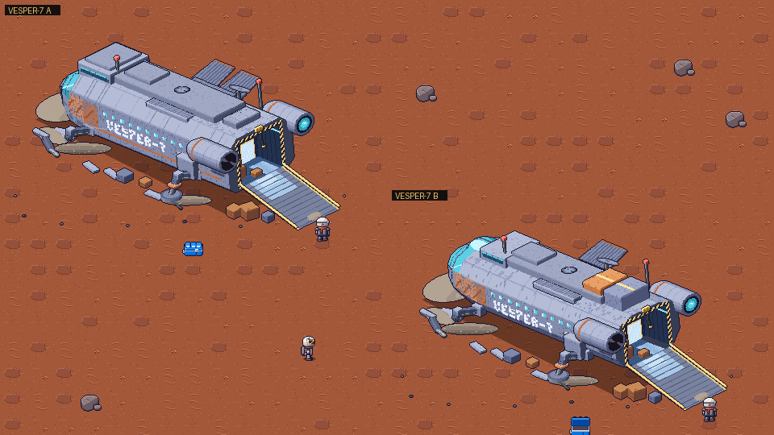
MortoVÉSPER A (em cima) e B (embaixo) 14×7, com o Explorador no pé de cada rampa (1:1)
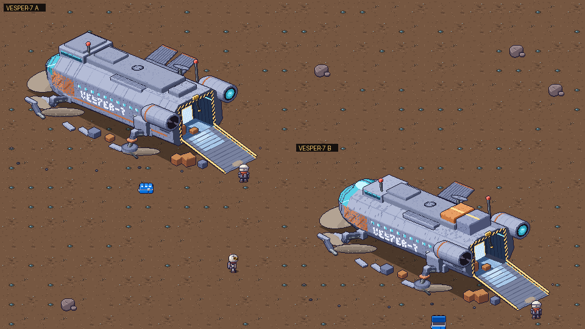
NévoaVÉSPER A (em cima) e B (embaixo) 14×7, com o Explorador no pé de cada rampa (1:1)
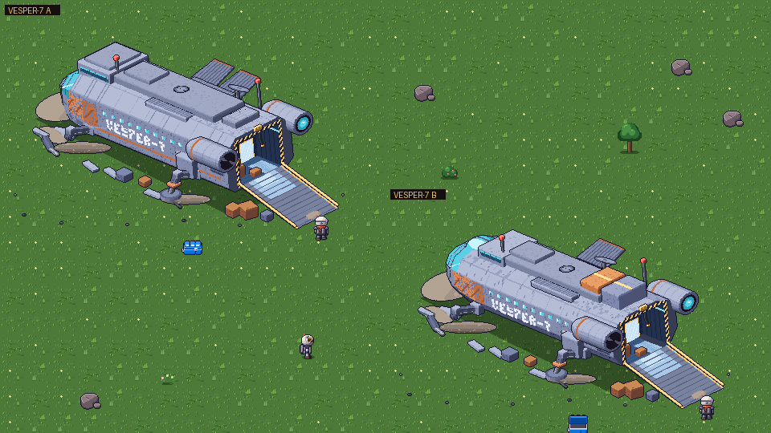
VerdeVÉSPER A (em cima) e B (embaixo) 14×7, com o Explorador no pé de cada rampa (1:1)
R4 · R3 × R4, com o player na rampa (2×)
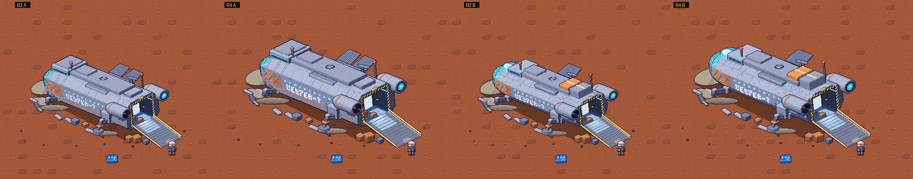
R4 · Sprites (2×)
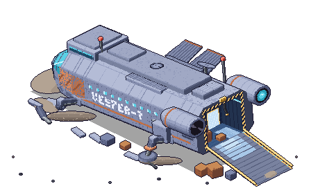
wreck_cargo_r4_A.png448×272 · 2×
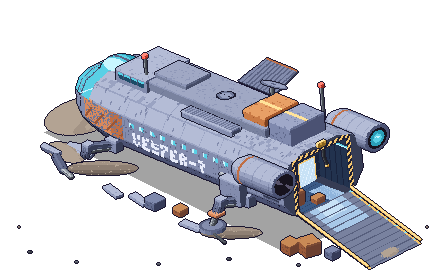
wreck_cargo_r4_B.png448×272 · 2×
R4 · Pro Dev
kind
arquivos (variantes pela seed)
pegada
sprite
lift
caixa
boca
chega por
cargo
wreck_cargo_r4_A, wreck_cargo_r4_B
14×7
448×272
48
(7,7)
(12,6)
(12,7)
hatch_in_target → (tx+12, ty+6); surface_exit → ((tx+12.5)·T, (ty+7)·T + 24) (sugestão: campo hatch=(12, 6) no WreckSpec).
sprite = (14·32, 7·32 + 48), blit (tx·32, ty·32 − 48), ordenado pelo pé da pegada.
As duas variantes têm a mesma pegada e as mesmas marcas: o sorteio pela seed só troca o PNG (por exemplo wreck_cargo_a / wreck_cargo_b em assets/sprites/, nomes a combinar com o gerente).
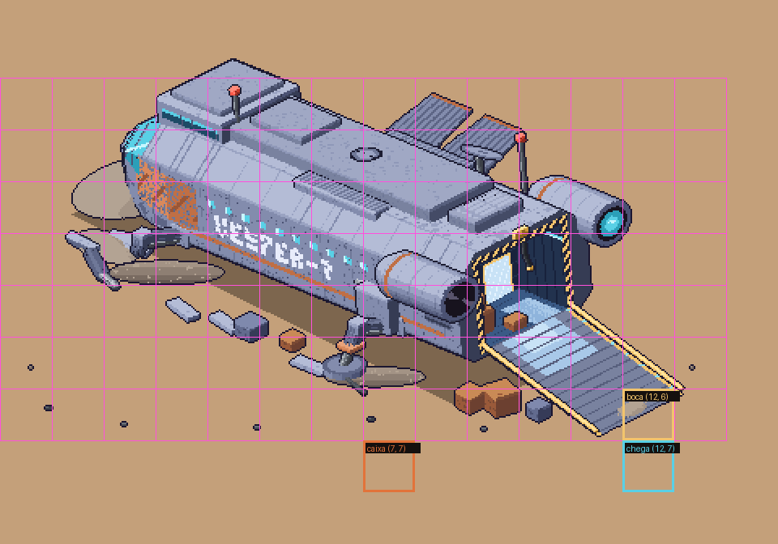
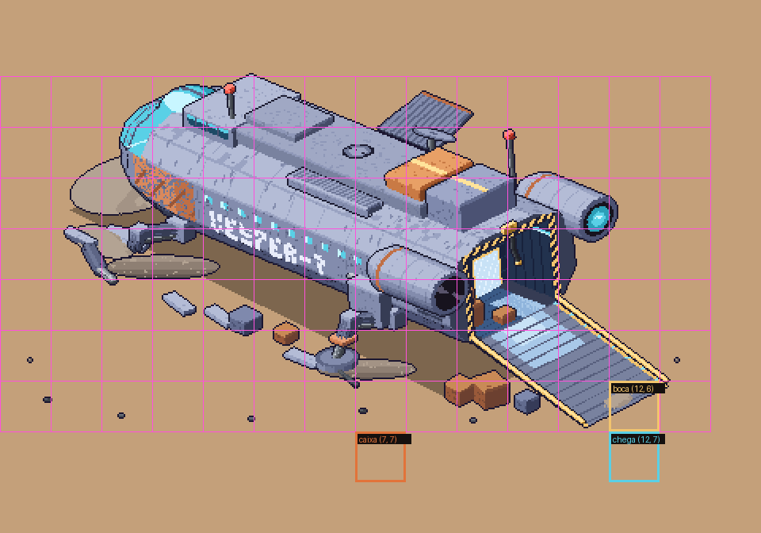
Rodada 3 · VÉSPER-7 v2 (aprovada pelo dono: A e B sorteadas pela seed, "um pouco maiores" → rodada 4)
v1.2 · o que mudou
Maior: de 10×5 (320×224) pra 12×6 (384×240), com a mesma alma: a cargueira de ardósia em isométrico, "VESPER-7" pintado (gasto), a faixa e o painel laranja desbotados e o porão aberto com a porta acesa.
Porão na traseira: a boca é a popa inteira (virada pra baixo-direita), com moldura de faixa de perigo e lâmpada âmbar. A rampa de carga é comprida e desce da traseira até a areia, com trilhos dourados, LEDs ciano e luz no piso. Dentro: piso claro, parede com fita de LED, costelas no teto, carga presa de um lado e o caminho livre até a porta acesa no fundo.
Menos caixa: o casco virou uma seção chanfrada (A) ou arredondada (B), com nariz de verdade e para-brisa (A em cunha com ponte de comando; B redondo com cabine-bolha de vidro), mais dois motores em pilones dos dois lados da rampa (um aceso, um apagado), radiadores abertos do lado de lá, espinha e módulos no convés, prato, antenas com LED, escotilha, módulo lateral com escada, vigias e amassados do impacto.
Pés: 4 pernas articuladas (caixa da dobradiça, braço com tirante, joelho, cilindro do amortecedor com anel laranja, haste cromada e sapata redonda). A da frente de perto quebrou (o toco ficou pendurado e o pedaço de baixo com a sapata virada está na areia). A de trás de lá está afundada. O casco ficou embicado 5°, com o nariz enterrado num monte de areia.
A × B: A tem casco chanfrado, ponte de comando e 2 radiadores. B tem casco arredondado, cabine-bolha, 2 contêineres de carga no convés e 1 radiador.
seeds 0–199 com a VÉSPER 12×6: nenhum destroço perdido, 2 ruínas em todossem peça na borda do canvasscript: tools/sprites/build_wrecks_v07_m4_r3.py
R3 · Prévias 960×540: chegando na rampa
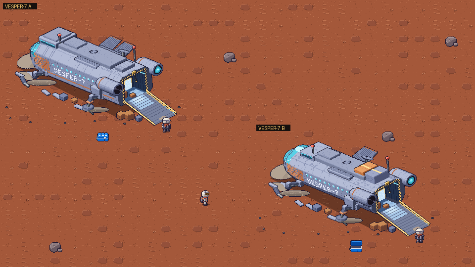
MortoVÉSPER A (em cima) e B (embaixo), com o Explorador no pé de cada rampa (1:1)
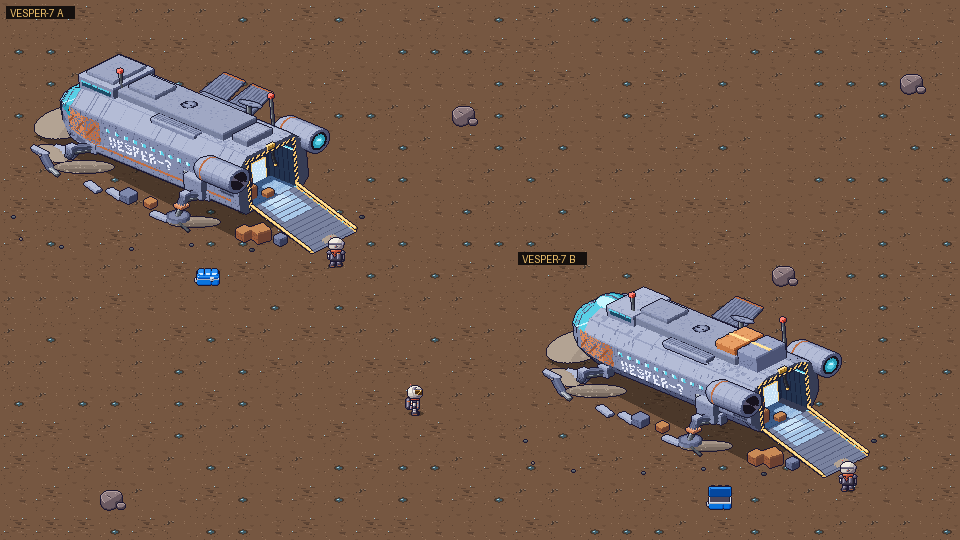
NévoaVÉSPER A (em cima) e B (embaixo), com o Explorador no pé de cada rampa (1:1)
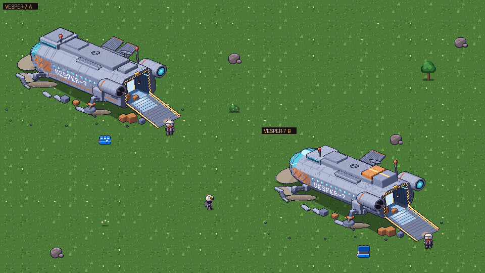
VerdeVÉSPER A (em cima) e B (embaixo), com o Explorador no pé de cada rampa (1:1)
R3 · Hoje × A × B, com o player na rampa (2×)
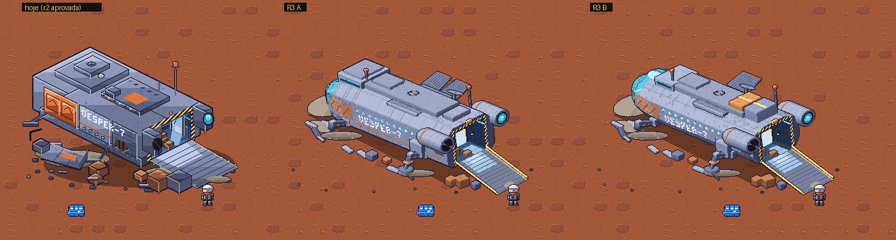
R3 · Candidatas ampliadas (2×)
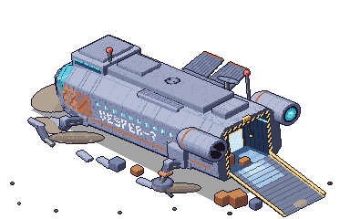
wreck_cargo_r3_A.png384×240 · 2×
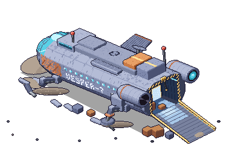
wreck_cargo_r3_B.png384×240 · 2×
R3 · Pro Dev
kind
arquivo
pegada
sprite
lift
caixa
boca
chega por
cargo
wreck_cargo_r3_{A,B} → wreck_cargo
12×6 (era 10×5)
384×240
48
(6,6)
(10,5)
(10,6)
A boca fica na fileira de baixo da pegada: o pé da rampa desenhado cai no tile (10,5). O tile de chegar, (10,6), fica logo abaixo, fora da pegada. A traseira com a rampa vira pra baixo-direita, então a boca não fica na lateral.
hatch_in_target → (tx+10, ty+5); surface_exit → ((tx+10.5)·T, (ty+6)·T + 24). Continua valendo a sugestão de virar campo do WreckSpec (hatch=(10, 5)).
Caixa (6,6): embaixo do meio do casco, fora da pegada e alcançável.
sprite = (12·32, 6·32 + 48), blit (tx·32, ty·32 − 48), ordenado pelo pé da pegada, como sempre.
Variantes: se as duas entrarem (como a ARCA e o robô), o sorteio pela seed só troca o PNG. A pegada e as marcas são as mesmas nas duas.
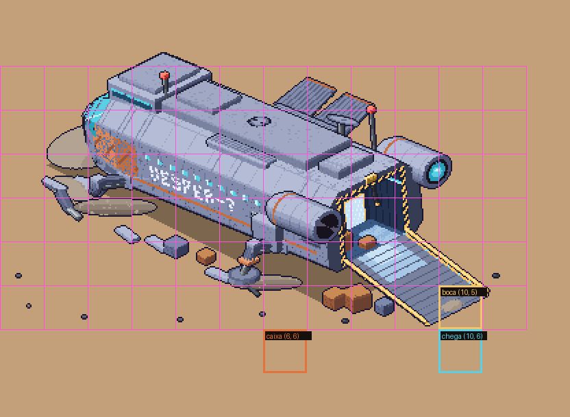
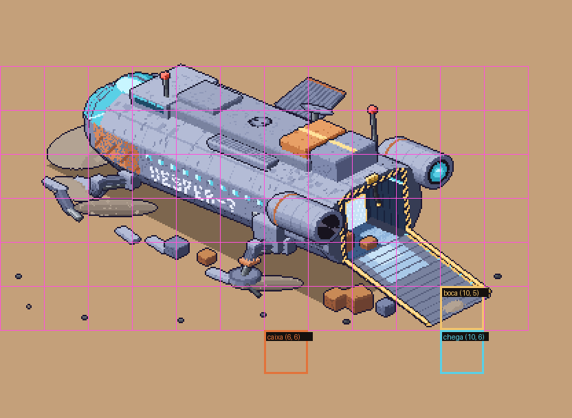
R3 · Decisões pro dono
A (chanfrada, ponte de comando) ou B (arredondada, cabine-bolha)? Ou as duas sorteadas?
O tamanho 12×6 tá bom, ou quer ainda maior?
A rampa na traseira chama pra entrar?
Rodada 2 (aprovada pelo dono: ARCA-2 A e B, robô A e B sorteados pela seed; correções ok)
v1.1 · o que mudou
Robô R-2 refeito em isométrico e menor, no jeito de robozinho simpático: corpo-caixa creme com faixa laranja e grade na frente, esteiras dos dois lados (rodas na lateral e sapatas), cabeça binocular num pescoço, bracinhos dobrados, painel solar no lombo e antena com LED. Fica com ~1,5× a altura do player e cabe em 3×2 (sprite 96×72, lift 8). A: parado, empoeirado, a lente esquerda rachada. B: tombado pro lado direito com a esteira afundada na areia, cabeça caída pra frente, uma lente rachada e a outra apagada, um braço pendurado, painel trincado e uma roda solta.
ARCA-2 refeita em isométrico, no mesmo padrão da VÉSPER: casco cilíndrico creme de nariz redondo, cabine com montantes, faixa, fileira de vigias (algumas apagadas), nome pintado, deriva, dois motores e trem de pouso. Uma parte do casco foi desmontada de propósito (LOG do dia 2): as chapas foram tiradas em quadros certinhos, com costelas e longarinas à mostra, a parede de dentro e poltronas faltando lá dentro, cabos puxados até o chão e as chapas tiradas empilhadas do lado. Bagagem e caixotes dos colonos estão espalhados. A: faixa laranja, o trecho do meio aberto, as duas asas. B: faixa ciano, a metade de trás quase toda aberta e a asa de perto também desmontada (sobrou o toco com as nervuras e os pedaços encostados). Continua 9×4.
Base espacial (wreck_module_r2.png): o anexo da direita (caixa creme com escada) estava encavalado no anel do domo, porque era desenhado antes do tambor estando na frente dele. Agora ele fica 8 mais pra frente e é desenhado depois. Os painéis solares foram pra trás-direita do tambor (sem cortar o domo), o painel caído saiu do pé do anexo e a ponta da antena saiu da borda de cima. As marcas não mudaram.
VÉSPER-7 (wreck_cargo_r2.png): o caixote azul caído do lado da rampa saía pela borda de baixo do canvas e o caixote da esquerda encostava na borda esquerda. Os dois vieram pra dentro (o caixotinho do lado da rampa foi pro pé do casco). As marcas não mudaram.
Sonda (wreck_probe_r2.png): conferindo todas as bordas, os dois painéis solares encostavam na esquerda e na direita (a ponta do da direita era cortada). Agora estão um tiquinho pra dentro.
Conferi as 4 bordas de todos: as versões r2 não encostam em nenhuma.
seeds 0–199 com robô 3×2 e ARCA 9×4: nenhum destroço perdido, 2 ruínas em todosscript: tools/sprites/build_wrecks_v07_m4_r2.py
R2 · Prévias 960×540
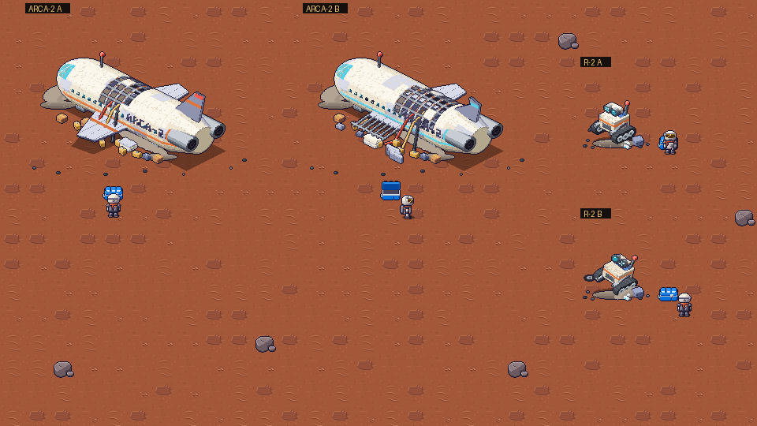
MortoARCA-2 A e B em cima, robô A e B à direita, Explorador em 4 lugares (1:1)
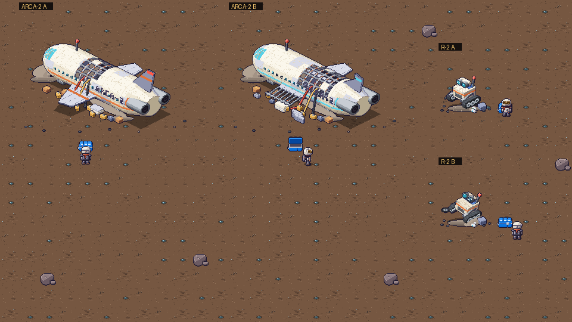
NévoaARCA-2 A e B em cima, robô A e B à direita, Explorador em 4 lugares (1:1)
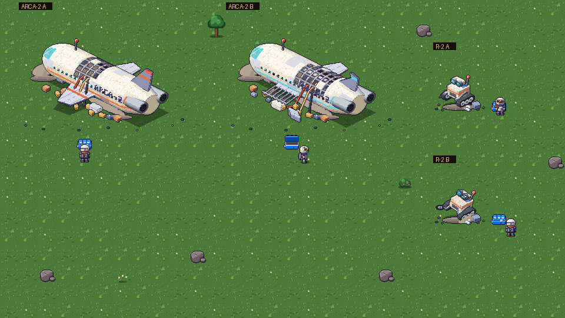
VerdeARCA-2 A e B em cima, robô A e B à direita, Explorador em 4 lugares (1:1)
R2 · Robô R-2: M3 × rodada 1 × A × B (2×)
Cada um com o player na caixa. O novo é menor que a rodada 1 e um pouco maior que o player.
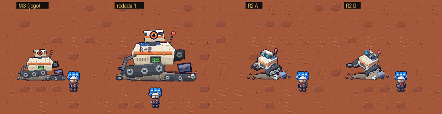
R2 · ARCA-2: rodada 1 × A × B (2×)
Cada um com o player na caixa (3,4).
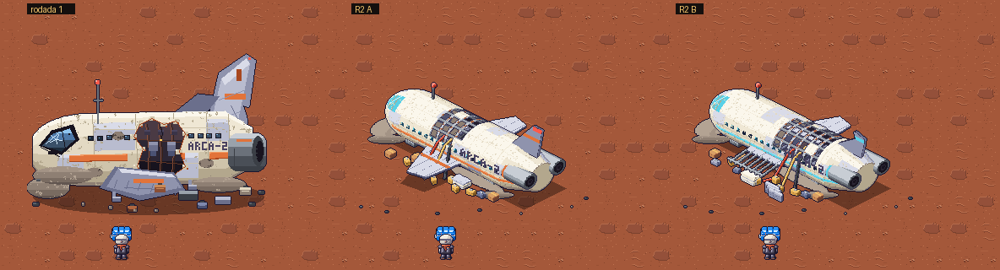
R2 · Candidatas ampliadas
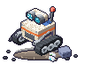
wreck_robot_r2_A.png96×72 · 1× e 4×
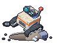
wreck_robot_r2_B.png96×72 · 1× e 4×
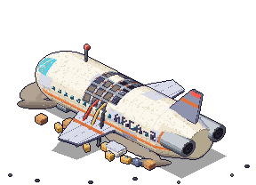
wreck_liner_r2_A.png288×208 · 2×
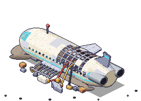
wreck_liner_r2_B.png288×208 · 2×
R2 · Correções: antes × depois
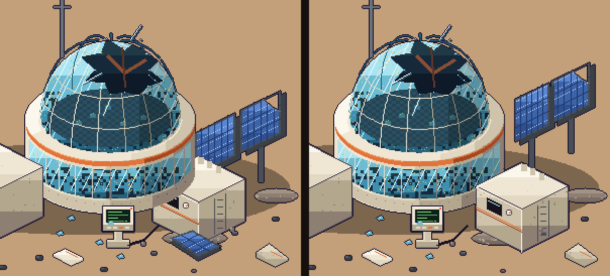
antes | depoisBase espacial: o anexo separado do anel do domo e desenhado na ordem certa, painéis atrás (2×)
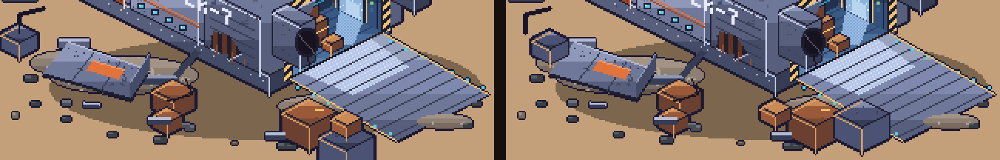
antes | depoisVÉSPER-7: os caixotes que saíam pela borda de baixo e pela esquerda (3×)
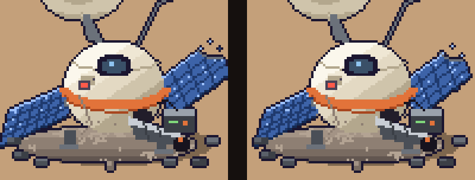
antes | depoisSonda: os painéis que encostavam nas bordas (4×)
R2 · Pro Dev
kind
arquivo
pegada
sprite
lift
caixa
outras marcas
robot
wreck_robot_r2_{A,B} → wreck_robot
3×2
96×72
8
(3,1)
—
liner
wreck_liner_r2_{A,B} → wreck_liner
9×4
288×208
80
(3,4)
—
module
wreck_module_r2 → wreck_module
14×5
448×294
134
(10,5)
terminal (8,4), lido de (8,5), contorno (251,224,32,26), porta (2,4) só arte
cargo
wreck_cargo_r2 → wreck_cargo
10×5
320×224
64
(2,5)
boca (8,4), chega por (8,5)
probe
wreck_probe_r2 → wreck_probe
3×2
96×96
32
(3,1)
LED (34,55,3,2)
Só o robô muda de contrato em relação à rodada 1: de 5×2 / 160×104 / lift 40 / caixa (2,2) pra 3×2 / 96×72 / lift 8 / caixa (3,1) (a pegada volta à do M3; o sprite passa 8 px pra cima por causa da antena).
Robô no bolsão (WRECK_RICH_KIND = "robot"): 3×2 no wreck_spot (x0+1, top+1) ocupa x0+1..x0+3. A caixa (3,1) cai em (x0+4, top+2), e o contêiner (x0+6, top+1) e o tile de baixo dele ficam livres. Tudo dentro do interior 8×7.
Base, VÉSPER e sonda: mesmo contrato da rodada 1, só troca o PNG.
Promover: copiar a candidata escolhida pra assets/sprites/wreck_<kind>.png.
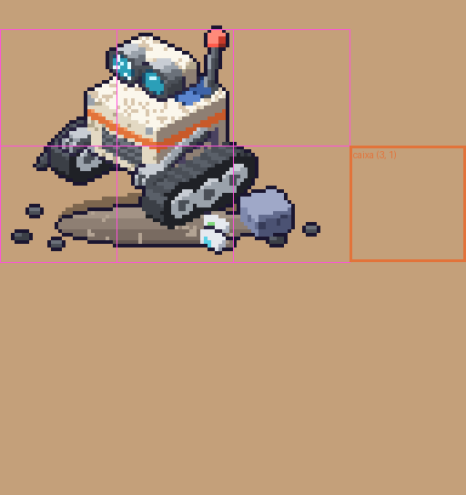
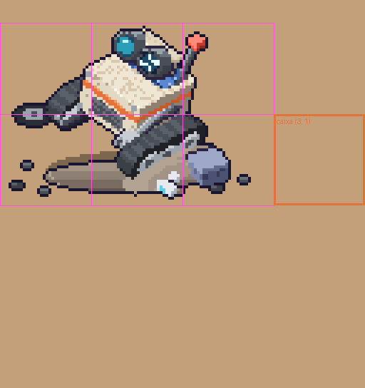
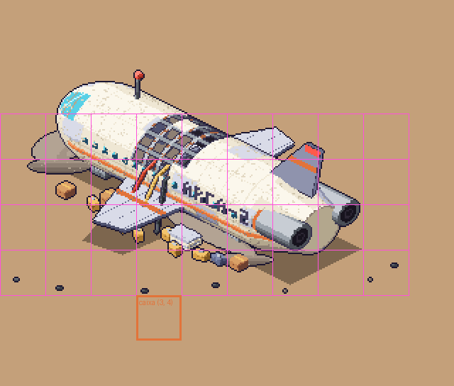
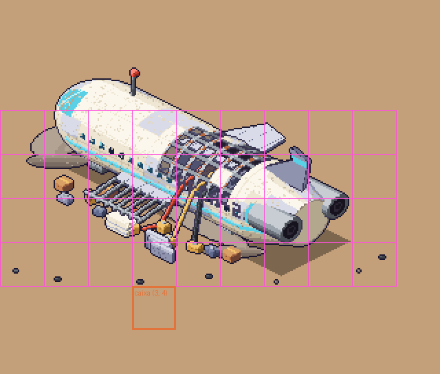
R2 · Decisões pro dono
Robô: A (parado) ou B (tombado)? O tamanho (~1,5× o player) tá bom?
ARCA-2: A (faixa laranja, meio aberto) ou B (faixa ciano, metade de trás aberta e asa desmontada)?
As correções da base, da VÉSPER e da sonda resolveram?
Rodada 1 (histórico)
Escala: hoje × novo, com o player
Tudo 1:1, na mesma régua, com um Explorador do lado de cada destroço. Em cima estão os de hoje (M3) e embaixo os novos. A imagem é larga: role pro lado.
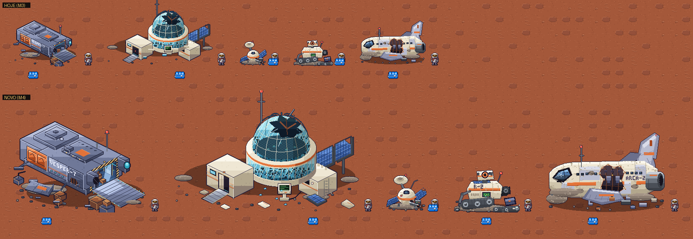
Cada destroço · hoje × novo (2×)
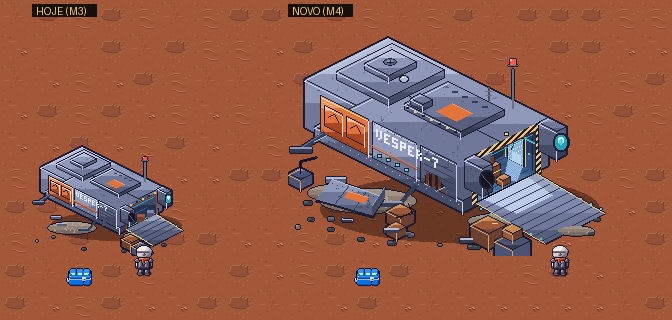
VÉSPER-75×3 → 10×5 · 160×128 → 320×224 · porão fundo com porta acesa, rampa até a borda da pegada · o player no tile de chegar
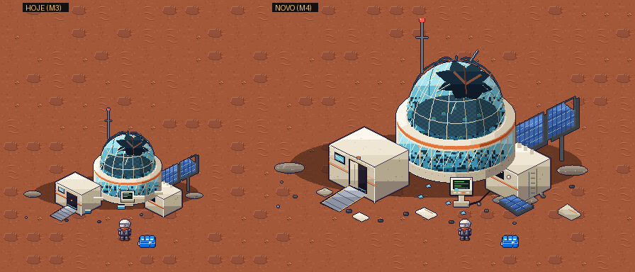
Base espacial8×4 → 14×5 · 256×168 → 448×294 · terminal na frente, eclusa entreaberta · o player no tile de ler
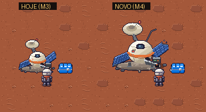
Sonda2×2 → 3×2 · 64×64 → 96×96 · o player do lado da caixa
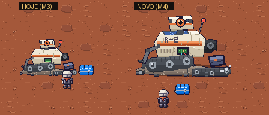
Robô de reconhecimento R-23×2 → 5×2 · 96×64 → 160×104 · caixa embaixo (cabe no bolsão)
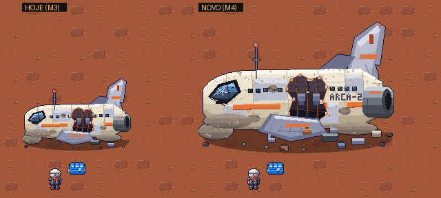
Nave de passageiros ARCA-25×3 → 9×4 · 160×120 → 288×208 · bagagem e poltronas espalhadas
Chegando na boca do porão
O Explorador anda até o pé da rampa: é o tile de onde o E entra. Animação em CSS, 3×.
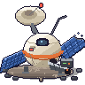
sonda 3× · LED piscando (o render apaga o retângulo do LED)
Prévias 960×540
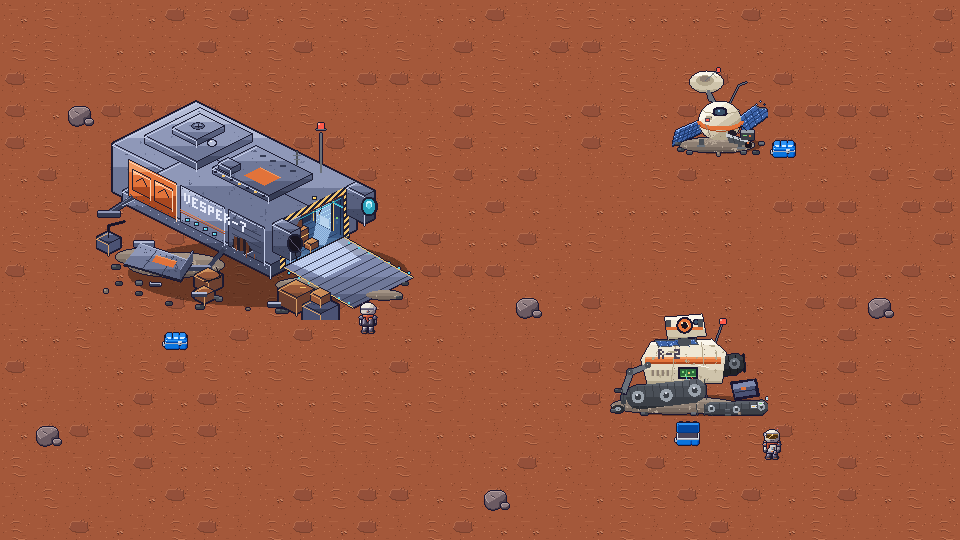
Morto · VÉSPER-7o player subindo pro porão, sonda e robô (caixa aberta) atrás
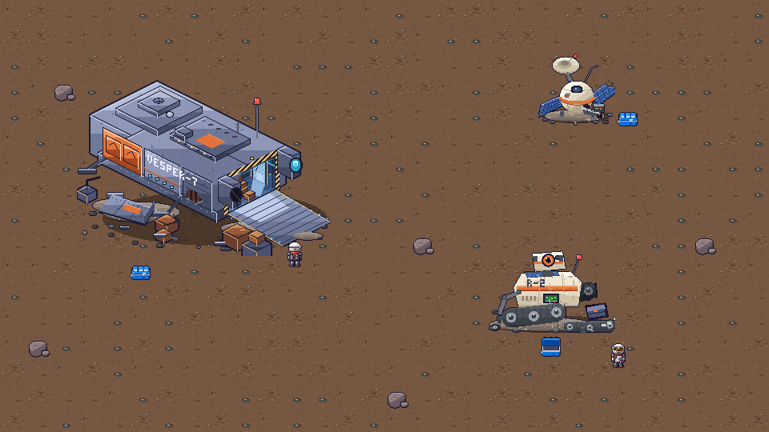
Névoa · VÉSPER-7o player subindo pro porão, sonda e robô (caixa aberta) atrás
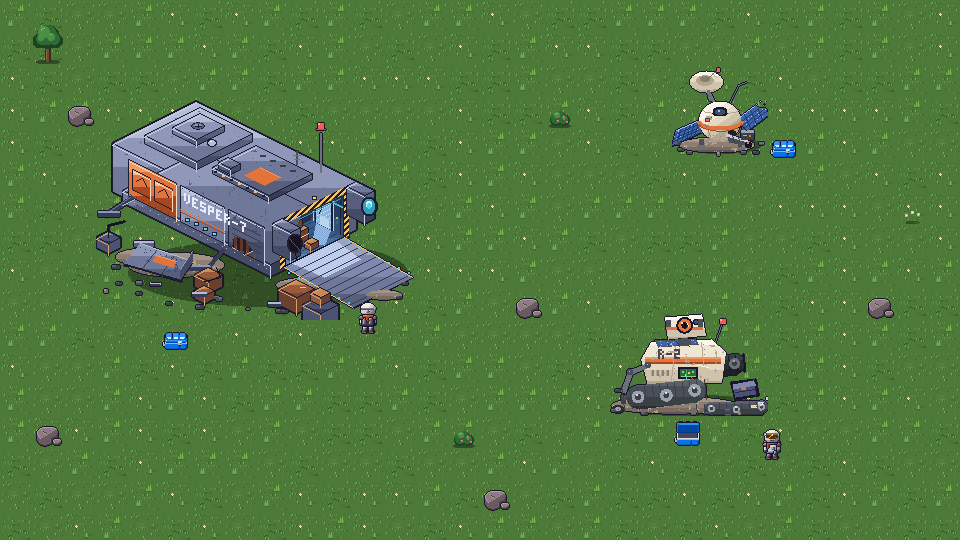
Verde · VÉSPER-7o player subindo pro porão, sonda e robô (caixa aberta) atrás
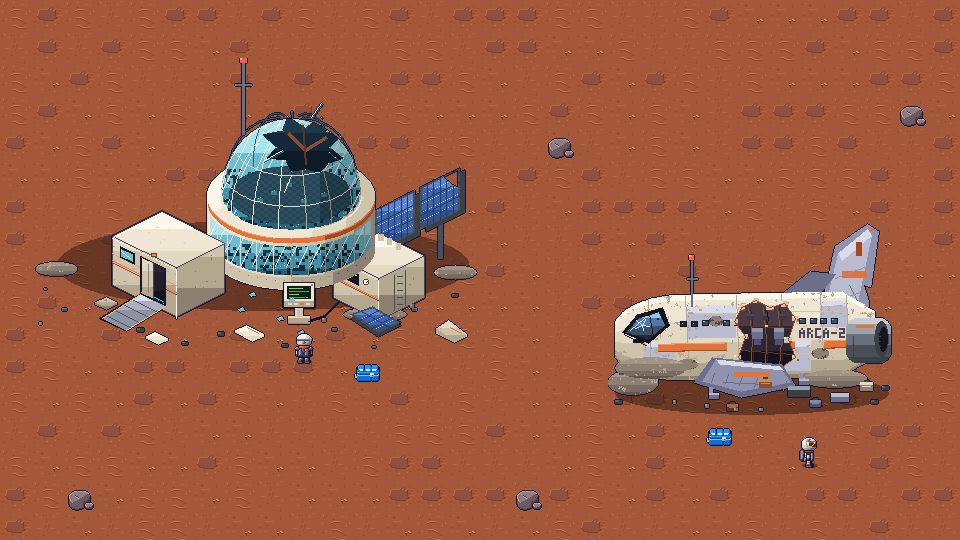
Morto · Base e ARCA-2o player lendo o terminal da base, ARCA-2 à direita
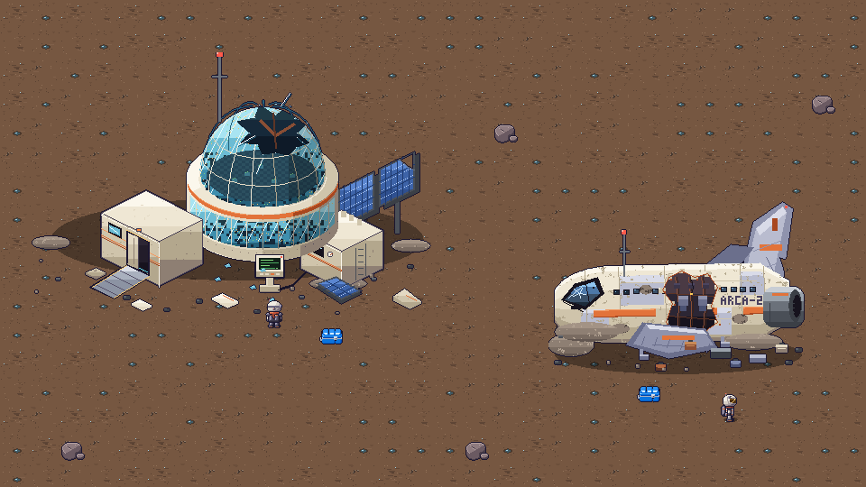
Névoa · Base e ARCA-2o player lendo o terminal da base, ARCA-2 à direita
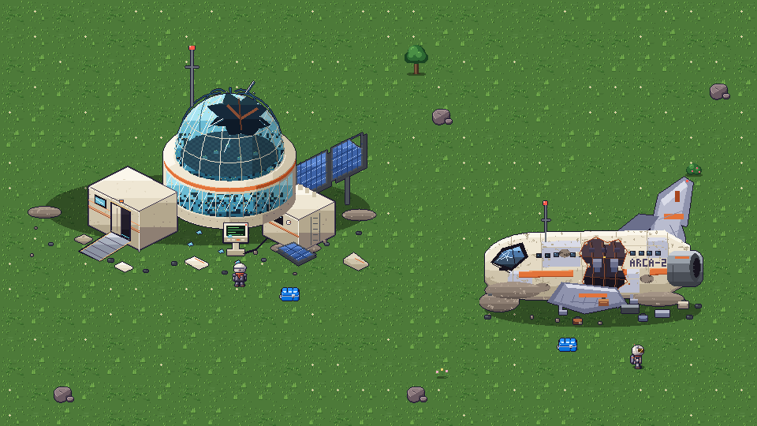
Verde · Base e ARCA-2o player lendo o terminal da base, ARCA-2 à direita
Sprites novos (1:1 e ampliados)
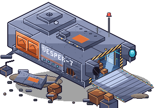
wreck_cargo.png320×224 · 1× e 2×
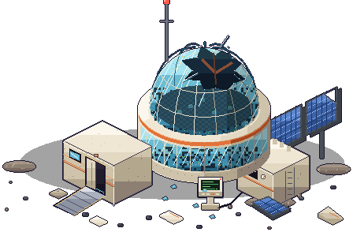
wreck_module.png448×294 · 1× e 2×wreck_probe.png96×96 · 1× e 3×
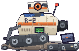
wreck_robot.png160×104 · 1× e 3×
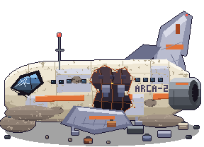
wreck_liner.png288×208 · 1× e 2×
Pro Dev integrar
Cada anotação mostra a grade da pegada (magenta, começa em y = lift), a caixa (laranja), a boca/terminal (dourado/verde), o tile de onde se chega/lê (ciano) e o contorno do E e o LED (branco, em px do sprite).
kind
pegada
sprite
tamanho
lift
caixa
terminal
lido de
boca / porta
chega por
contorno / LED (px)
cargo VÉSPER-7
10×5 era 5×3
wreck_cargo
320×224
64
(2,5)
—
—
(8,4) boca
(8,5)
—
module Base espacial
14×5 era 8×4
wreck_module
448×294
134
(10,5)
(8,4)
(8,5)
(2,4) porta, só arte
(2,5)
contorno (251, 224, 32, 26)
probe Sonda
3×2 era 2×2
wreck_probe
96×96
32
(3,1)
—
—
—
—
LED (34, 55, 3, 2)
robot Robô de reconhecimento R-2
5×2 era 3×2
wreck_robot
160×104
40
(2,2)
—
—
—
—
—
liner Nave de passageiros ARCA-2
9×4 era 5×3
wreck_liner
288×208
80
(3,4)
—
—
—
—
—
Blit e ordem: não muda nada. O sprite vai em (tx·32, ty·32 − lift) e é ordenado pelo pé da pegada (anchor). Todos seguem sprite = (pegada_w·32, pegada_h·32 + lift) (o teste de contrato já confere isso). A caixa continua sendo o loot_crate 32×32 por cima, no tile dela.
Toda marca de interação fica fora da pegada ou na fileira de baixo dela. Caixas: todas fora (embaixo ou do lado). Boca do porão e terminal: na última fileira da pegada, e o tile de chegar/ler fica logo abaixo, fora dela. Nenhuma marca caiu dentro da parte sólida (o furo do "(4,3)" do M3 não se repete).
VÉSPER-7: hatch_in_target passa de (tx+3, ty+2) pra (tx+8, ty+4), e surface_exit pra ((tx+8.5)·T, (ty+5)·T + 24). Sugestão: virar campo do WreckSpec (ex. hatch=(8, 4)) em vez de número no systems.py. O pé da rampa desenhado cai em x 240–310 / y 190–215 do sprite, dentro do tile (8,4).
Base espacial: terminal (8,4) lido de (8,5), que é logo abaixo, então dá até pra deixar reads_from=None. terminal_rect=(251, 224, 32, 26). A porta da eclusa (2,4) continua só arte.
Sonda: o LED piscante mudou de lugar. No draw_wreck, troque fill(..., (x+23, y+37, 2, 1)) por (x+34, y+55, 3, 2).
Robô no bolsão (WRECK_RICH_KIND = "robot"): 5×2 no wreck_spot (x0+1, top+1) ocupa x0+1..x0+5. A caixa (2,2) cai em (x0+3, top+3), e o contêiner (x0+6, top+1) fica livre e com o tile de baixo dele livre. Tudo dentro do interior 8×7. Por isso a caixa do robô foi pra baixo: do lado direito, ela cairia embaixo do contêiner.
Fallback (art.wreck) e tests/test_wrecks.py (test_specs_match_sprite_contract) leem os números novos da tabela.
Promover: copiar pendentes/wreck_*.png → assets/sprites/ (mesmos nomes). O build_sprites.py ainda gera os antigos e não foi rodado.
VÉSPER-7
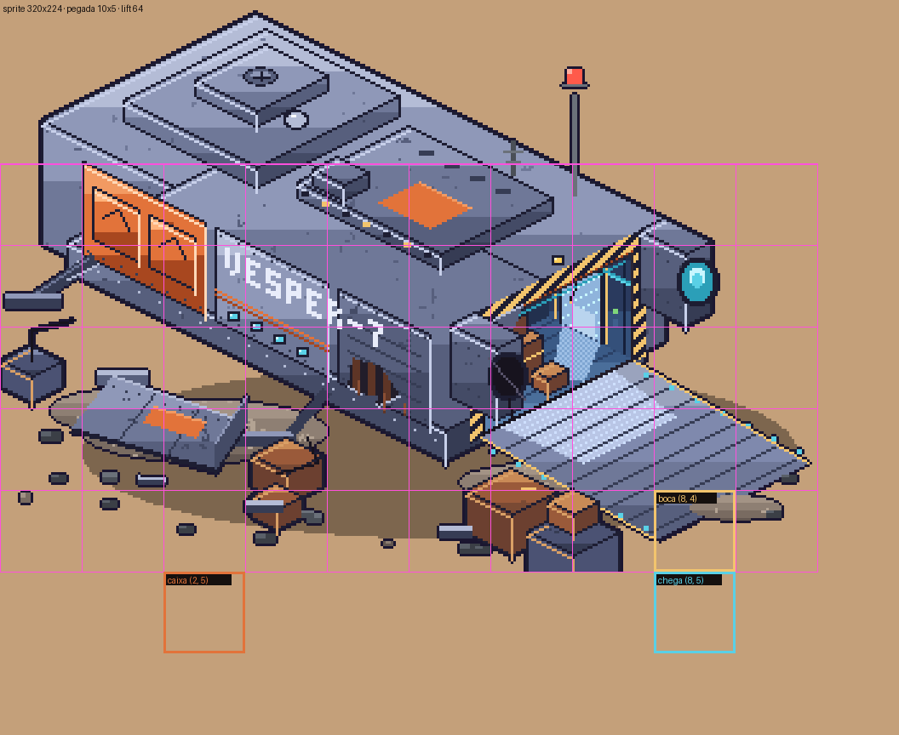
Base espacial
Sonda
Robô de reconhecimento R-2
Nave de passageiros ARCA-2
Geração do mundo: cabe?
Testei com o gerador de verdade (generate_surface), trocando só a pegada e a caixa do SPECS pelas novas, sem mexer em WRECK_DIST, WRECK_SPACING nem WRECK_MARGIN:
Teste de estresse (VÉSPER 12×6, base 14×7, ARCA 11×5, robô 5×3, sonda 3×3), 60 seeds: nenhum destroço perdido, 2 ruínas em todos.
Teto sugerido: até 12×6 nas naves e 14×7 na base ainda cabe com folga. Acima disso eu não testei. Com a pegada maior, o sorteio às vezes aceita um lugar um pouco mais longe do alvo de distância (o jitter cresce com as tentativas), mas a ordem perto → longe continua garantida.
Decisões pro dono
A escala nova tá boa? VÉSPER 2×, base 1,75×, ARCA 1,8×, robô 1,67×, sonda 1,5×.
O porão da VÉSPER chama pra entrar? (porta acesa no fundo, rampa comprida, luz no piso)